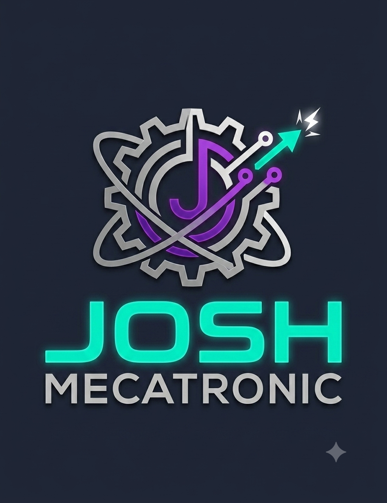

Innovación, diagnóstico computarizado y alta ingeniería automotriz
En Josh Mecatronic fusionamos la mecánica automotriz tradicional con los sistemas electrónicos modernos de control computarizado. Contamos con ingenieros y técnicos capacitados para resolver fallas complejas en vehículos modernos, híbridos y eléctricos.
| Especialidad | Descripción | Tiempo Estimado |
|---|---|---|
| Diagnóstico por Escáner Avanzado | Lectura de redes CAN Bus, reprogramación de ECU y reseteo de módulos. | 1 - 2 horas |
| Sistemas ABS y Estabilidad | Mantenimiento de sensores de velocidad, cuerpos valvulares y purga electrónica. | Mismo día |
| Inyección Electrónica | Limpieza de inyectores por ultrasonido y optimización de consumo de combustible. | 1 día |
| Vehículos Híbridos y Eléctricos | Diagnóstico de baterías de alto voltaje e inversores de corriente. | Bajo evaluación |
Contamos con software de nivel concesionario y equipamiento específico para:
Diagnóstico avanzado en redes multiplexadas (CAN Bus), codificación de módulos y reprogramación de computadoras.
Análisis de salud de baterías de alto voltaje (SOH), inversores de potencia y sistemas de aislamiento electrónico.
Puesta a punto de sistemas Common Rail de alta presión, turbos de geometría variable y regeneración de filtros DPF.
Dirección: San Juan-Pasco
Teléfono / WhatsApp: +51 987 654 321
Horario: Lunes a Viernes de 8:00 AM a 6:00 PM | Sábados hasta la 1:00 PM
💬 Chat directo por WhatsApp